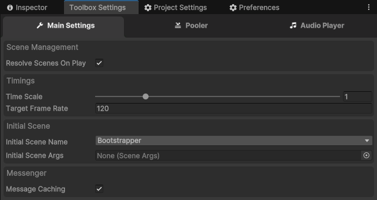
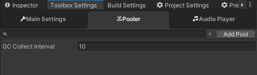
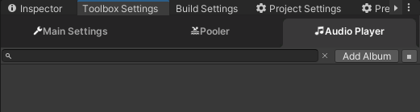

Toolbox Settings
Basics
From this window, you can adjust main settings, edit initial pools, set up audios, and edit properties in the database.
The 'Toolbox Settings' window has three tabs:
- Main Settings
- Pooler
- Audio Player
Let's look at all of them.
Main Settings

In this tab, you can edit the following properties:
Resolve Scenes On Play: Changes the OnPlay behavior. If enabled, Toolbox will close all opened scenes and start all with theMAINscene (after stopping play, all scenes will be restored).Time Scale: The ordinary time scale that affects all scripts derived fromMonoCached.Target Frame Rate: The default target frame rate option, which will be set at startup.Initial Scene Name: The scene that will be loaded first after theMAINscene is loaded.Initial Scene Args: Arguments for the initial scene.Message Caching: Indicates whether message caching should be enabled (see Messenger).
Pooler

From this window, you can edit the initial pools list, adjust the properties of each pool, and set the garbage collector interval.
Audio Player

From this window, you can edit the audio albums list and adjust the properties of each album.